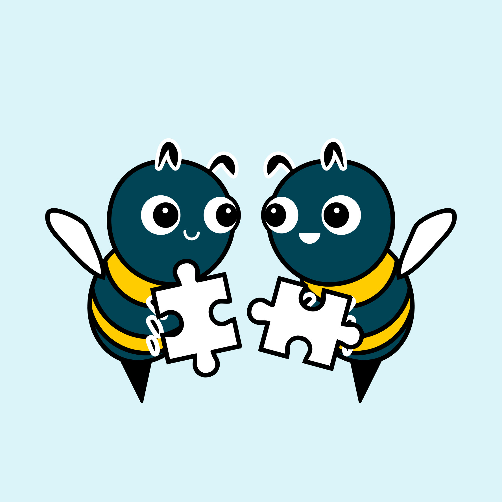

Connectors
How to set up and manage Nektar's integrations with your connected tools.

Salesforce
Set up the integration user, establish a connection, configure sync, and review APIs used by Nektar in your Salesforce org.Integration user, connection, sync, and APIs for your Salesforce org.

Google Workspace
Connect Gmail and Google Calendar to automatically capture customer interactions and write them to Salesforce.Capture Gmail and Google Calendar interactions into Salesforce.

Microsoft 365
Connect Outlook and Microsoft Teams to capture email and meeting engagement without any change to how your reps work.Capture Outlook and Teams engagement without rep behavior change.

Zoom
Capture Zoom meeting data and sync it natively into your CRM — contact, account, and opportunity records stay current automatically.Sync Zoom meeting data to contacts, accounts, and opportunities.